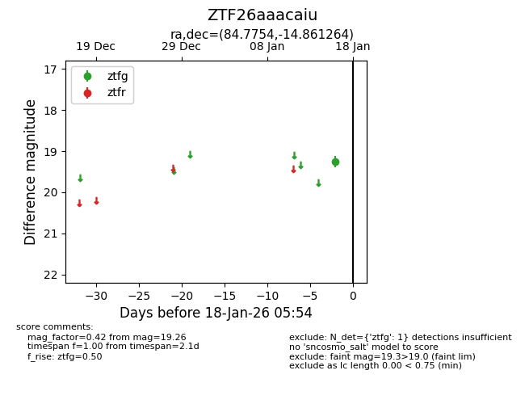
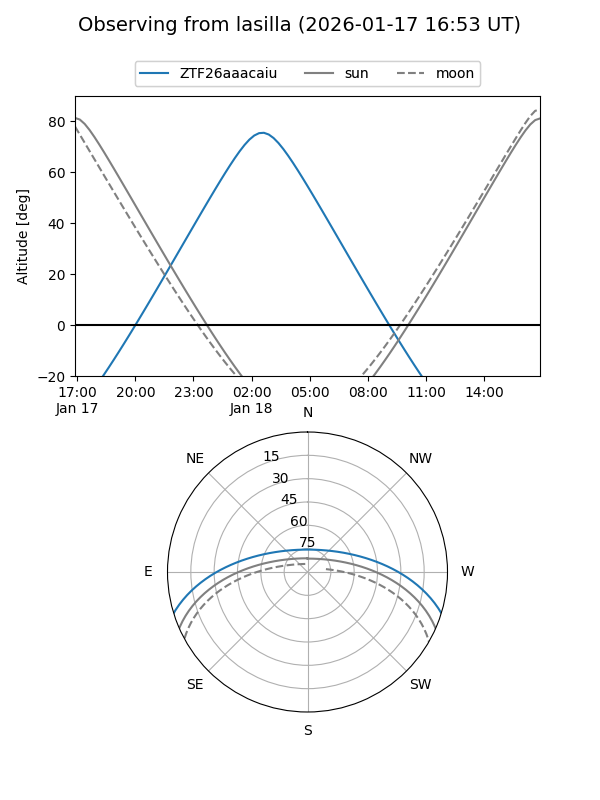
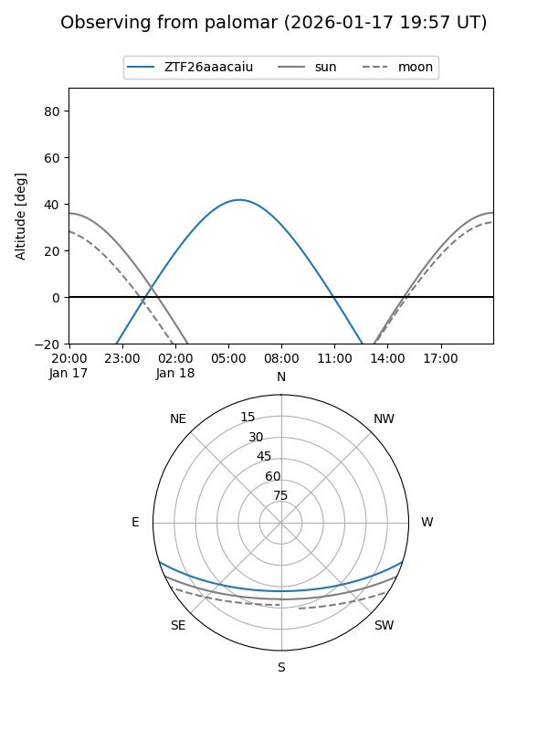

ZTF26aaacaiu
Target ZTF26aaacaiu at 2026-01-16 05:55
Aliases and brokers:
FINK: link
Lasair: link
ALeRCE: link
alt names
ZTF26aaacaiu (ztf,fink_ztf)
Coordinates:
equatorial (ra, dec) = 84.7754,-14.86126
equatorial (HMS+DMS) = 05:39:06.10,-14:51:40.55
galactic (l, b) = (218.6163,-22.57994)
Flags:
Photometry:
last ztfg=19.26
1 ztfg detections
Lightcurve

Visibility


Additional plots